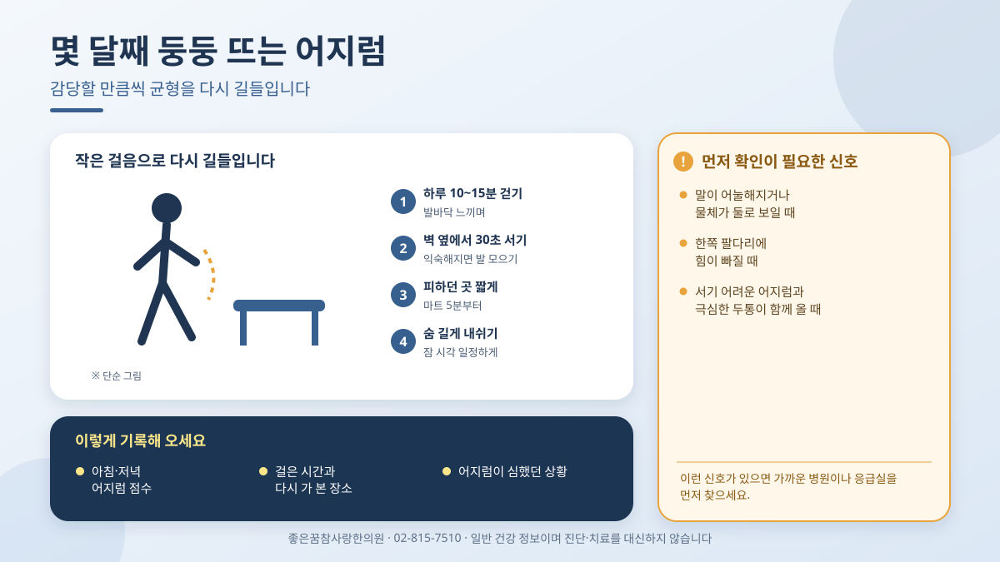

이종호 한의사 감수좋은꿈참사랑한의원 대표원장 (한의사 면허번호 19769)발행 2026-11-26 · 수정 2026-11-26
이 글의 차례
대형 마트에 들어서는 순간부터 몸이 붕 뜹니다. 끝없이 늘어선 진열대와 반짝이는 조명, 오가는 카트 사이를 걷다 보면 바닥이 출렁이는 것 같아 카트 손잡이를 꽉 붙잡게 됩니다. 집에 누워 있으면 조금 나은데, 다시 서서 움직이면 그 느낌이 돌아옵니다. 벌써 몇 달째입니다.
진료실에서 이런 어지럼을 말씀하시는 분들은 대개 지쳐 있습니다. 이비인후과도, 신경과도 다녀왔고, 귀와 뇌 검사에서 큰 이상이 없다는 말을 들었습니다. 그런데 어지럼은 그대로입니다. "제가 예민해서 그런 걸까요"라고 물으시는 목소리에 서운함이 묻어 있습니다.
이런 어지럼에는 지속성 체위-지각 어지럼, 영어 머리글자로 PPPD라는 이름이 있습니다. 비교적 최근에 정리된 진단 이름이라 아직 낯선 분이 많지만, 오래가는 어지럼 가운데 꽤 흔한 편이라고 알려져 있습니다. 검사에서 이상이 없다는 것과 어지럼이 없다는 것은 같은 말이 아닙니다.
이 글에서는 이 어지럼이 왜 생기고 왜 오래가는지, 다른 어지럼과는 어떻게 다른지, 그리고 균형 감각을 다시 길들이기 위해 생활에서 무엇을 해 볼 수 있는지를 정리했습니다. 기분 탓이 아니라 몸이 균형을 잡는 방식이 달라진 것이라는 점부터 말씀드리고 싶습니다.
지속성 체위-지각 어지럼은 어떤 느낌인가요?
세상이 빙빙 도는 어지럼보다는 몸이 둥둥 뜨거나, 흔들리거나, 바닥이 출렁이는 듯한 느낌으로 말씀하시는 경우가 많습니다. 머리 안이 멍하고 무겁다고 표현하시기도 합니다. 이런 느낌이 거의 매일, 석 달 넘게 이어지는 것이 특징입니다.
어지럼은 서 있거나 걸을 때 심해지고, 앉거나 누우면 덜해집니다. 움직이는 것을 볼 때, 예를 들어 차창 밖 풍경이나 화면이 빠르게 넘어가는 영상, 붐비는 사람들 속에 있을 때도 심해집니다. 마트, 지하철역, 큰 쇼핑몰처럼 눈으로 들어오는 정보가 많은 곳을 힘들어하시는 분이 많습니다.
하루 중에도 오르내림이 있습니다. 아침에는 조금 낫다가 오후로 갈수록 무거워지는 분도 있고, 피곤하거나 긴장한 날 훨씬 심해지는 분도 있습니다. 어지럼이 있다는 것을 계속 의식하게 되면서 걸음이 조심스러워지고 외출을 줄이게 되기도 합니다.
왜 어지럼이 이렇게 오래 이어질까요
우리 몸은 균형을 잡을 때 귀 속의 평형 기관, 눈으로 보는 정보, 발바닥과 관절에서 오는 감각을 함께 씁니다. 평소에는 이 세 가지를 적당히 나눠 쓰면서, 균형 잡는 일을 의식하지 않고 자동으로 처리합니다.
그런데 이석증이나 전정신경염처럼 심한 어지럼을 한 번 겪으면, 뇌는 넘어지지 않으려고 비상 모드로 바뀝니다. 귀의 정보를 덜 믿고 눈에 더 기대며, 몸을 굳혀 조심스럽게 서고 걷습니다. 위급할 때는 이것이 몸을 지켜 주는 좋은 반응입니다.
문제는 원래의 어지럼이 지나간 뒤에도 이 비상 모드가 풀리지 않는 경우입니다. 뇌는 계속 눈에 기대고 몸을 굳힌 채 균형을 지나치게 감시합니다. 그러다 보니 눈으로 들어오는 정보가 많은 곳에서 쉽게 버거워지고, 자연스러운 움직임에서도 흔들림을 크게 느끼게 된다고 설명합니다.
여기에 '또 어지러우면 어쩌지' 하는 걱정이 더해지면 몸은 더 굳고 감시는 더 심해집니다. 그래서 이 어지럼은 귀나 뇌가 망가진 것이 아니라, 균형을 잡는 방식이 한쪽으로 치우쳐 굳어진 상태로 이해하시면 됩니다. 굳어진 방식은 다시 길들일 수 있습니다.
다른 어지럼과는 무엇이 다른가요
이석증은 머리 위치가 바뀌는 순간 짧게 빙글 도는 어지럼이 옵니다. 메니에르병은 귀 먹먹함과 함께 몇 시간씩 도는 어지럼이 발작처럼 옵니다. 전정 편두통은 두통과 함께 또는 따로 어지럼 발작이 옵니다. 이 어지럼들은 대개 '왔다가 가는' 모양입니다.
지속성 체위-지각 어지럼은 발작처럼 왔다 가기보다 거의 매일 은근하게 이어집니다. 다만 원래의 이석증이나 편두통이 함께 남아 있는 경우도 있어서, 진료실에서는 지금의 어지럼이 어느 쪽의 모양에 더 가까운지 하나씩 나눠 봅니다.
새로 생긴 어지럼이거나 어지럼의 모양이 최근에 달라졌다면, 이 이름을 붙이기 전에 이비인후과나 신경과에서 귀와 뇌의 다른 원인을 먼저 확인하는 것이 순서입니다. 그 확인이 있어야 마음 놓고 균형 감각을 길들이는 쪽으로 나아갈 수 있습니다.
피하는 것이 오히려 어지럼을 키울 때
어지러운 곳을 피하는 것은 자연스러운 반응입니다. 마트에 가면 어지러우니 온라인으로 장을 보고, 지하철이 힘드니 택시를 타고, 걷기가 불안하니 집에 머뭅니다. 당장은 편하지만, 피할수록 몸이 균형을 다시 배울 기회도 줄어듭니다.
뇌는 경험으로 배웁니다. 조금 어지러운 상황에서도 넘어지지 않고 지나갔다는 경험이 쌓여야 '이 정도는 괜찮구나' 하고 비상 모드를 풀 수 있습니다. 그래서 회복의 길은 피하는 것이 아니라, 감당할 수 있는 만큼씩 조금씩 다가가는 쪽에 있습니다.
물론 무리하게 견디라는 뜻은 아닙니다. 어지러움을 10점 만점으로 매긴다면 3~4점 정도 올라오는 상황에서 잠시 머물렀다가, 쉬면 다시 가라앉는 정도가 적당합니다. 그 범위를 진료실에서 함께 정해 드립니다.
마음의 긴장과 어지럼
오래가는 어지럼은 마음에도 큰 짐이 됩니다. 언제 어지러울지 몰라 늘 긴장하고, 외출을 줄이면서 우울해지기도 합니다. 반대로 불안과 긴장이 몸을 굳히고 균형 감시를 키워 어지럼을 더 무겁게 만들기도 합니다.
그래서 진료실에서는 어지럼과 함께 잠, 걱정, 기분을 꼭 여쭙니다. 마음을 살피는 것은 어지럼이 마음 탓이라는 뜻이 아니라, 몸과 마음이 서로 붙잡고 있는 고리를 함께 느슨하게 하자는 뜻입니다.
걱정이 크고 잠을 이루기 어려운 날이 이어진다면 신경과나 정신건강의학과에서 상의해 보시는 것도 도움이 됩니다. 이 어지럼에 쓰이는 약 치료가 있는 경우도 있어서, 병원 진료와 생활 관리를 함께 이어 가는 것이 좋습니다.
가족과 주변이 도울 수 있는 것
오래가는 어지럼은 겉으로 잘 보이지 않아서 주변에서 이해받기 어렵습니다. "검사도 괜찮다는데 왜 그래"라는 말은 본인에게 큰 상처가 됩니다. 가족이라면 어지럼이 진짜로 있다는 것을 먼저 믿어 주시는 것이 가장 큰 힘이 됩니다.
그렇다고 모든 일을 대신해 주는 것이 꼭 도움이 되는 것은 아닙니다. 장보기를 대신해 주기보다, 함께 마트에 가서 옆에서 천천히 걸어 주는 쪽이 회복에는 더 좋은 경우가 많습니다. 곁에 누군가 있다는 안심이 몸의 긴장을 풀어 줍니다.
산책을 함께 나가는 것도 좋습니다. 처음에는 집 앞 골목 한 바퀴, 다음에는 공원까지처럼 거리를 조금씩 늘려 가며 함께 걸어 주세요. 걷는 동안 어지럼 이야기보다 일상 이야기를 나누면 어지럼에 쏠린 주의도 조금 느슨해집니다.
컨디션에 따라 오르내리는 어지럼
이 어지럼은 몸의 여유에 따라 크게 오르내립니다. 잠을 설친 날, 감기에 걸린 날, 생리 전후, 일이 몰린 주에는 어지럼이 더 무거워졌다고 말씀하시는 분이 많습니다. 이런 날 어지럼이 심해졌다고 해서 처음으로 되돌아간 것은 아닙니다.
컨디션이 떨어진 날에는 연습의 단계를 한 칸 낮추고, 좋은 날에 다시 한 칸 올리면 됩니다. 매일 같은 양을 해내는 것보다 꾸준히 이어 가는 것이 더 중요합니다.
먼저 이렇게 여쭙니다
처음 오시면 저는 대략 이런 순서로 여쭙니다. 미리 떠올려 오시면 이야기가 훨씬 수월해집니다.
- 어지럼은 언제, 어떤 계기로 처음 시작됐나요?
- 지금의 어지럼은 돌기, 뜨기, 흔들림 가운데 어디에 가깝나요?
- 서 있을 때, 걸을 때, 누워 있을 때 각각 어떤가요?
- 마트, 지하철, 화면 스크롤처럼 힘든 상황이 있나요?
- 어지럼 때문에 줄이거나 피하게 된 일이 있나요?
- 잠, 걱정, 기분은 요즘 어떠신가요?
- 이비인후과나 신경과에서 받은 검사와 드시는 약이 있나요?
이 질문들에 답하다 보면 어지럼의 모양과 함께, 그 어지럼이 하루를 어떻게 바꿔 놓았는지가 보입니다. 그 둘을 함께 보아야 다음 걸음을 정할 수 있습니다.
일상에서 먼저 해 볼 수 있는 것
균형 감각을 다시 길들이는 일은 작은 걸음부터 시작합니다. 어지럼이 조금 올라와도 괜찮다는 마음으로, 아래 가운데 하나를 골라 매일 이어 가 보세요.
- 하루 10~15분, 앞을 보며 평평한 길 걷기
- 걸을 때 발바닥이 땅에 닿는 느낌에 주의 기울이기
- 집 안에서 벽 가까이 서서 눈을 뜨고 30초 버티기, 익숙해지면 발을 모으기
- 앉아서 고개를 천천히 좌우로 돌리며 한 점 바라보기
- 피하던 장소를 아주 짧게, 조금씩 다시 가 보기
- 잠드는 시각을 일정하게 맞추기
마트가 힘든 분이라면 처음에는 사람이 적은 시간에 5분만 들어갔다 나오는 것부터 시작해도 괜찮습니다. 다음에는 10분, 그다음에는 진열대 한 줄을 끝까지 걸어 보는 식으로 조금씩 늘려 가세요. 어지럼이 가라앉는 것을 확인하는 경험이 쌓이는 것이 중요합니다.
화면을 볼 때 어지럽다면 글씨를 조금 크게 하고, 스크롤은 천천히 하며, 화면에서 눈을 떼어 먼 곳을 보는 시간을 자주 가져 보세요. 움직이는 영상을 오래 보는 일은 처음에는 짧게 나눠 보시는 편이 좋습니다.
숨을 고르는 연습도 함께 해 보세요. 어지럼이 올라올 때 숨이 얕고 빨라지면 몸이 더 굳습니다. 그 자리에 서서 발바닥을 느끼며 내쉬는 숨을 길게 서너 번 하고 나면, 어지럼이 지나갈 여유가 생기는 것을 느끼실 수 있습니다.
한의원에서 함께 살필 수 있는 경우
- 귀와 뇌 쪽 검사에서 큰 이상이 없다고 들었는데 어지럼이 몇 달째 이어지는 경우
- 이석증이나 전정신경염이 지나간 뒤에도 둥둥 뜨는 느낌이 남은 경우
- 어지럼과 함께 목과 어깨가 굳고 잠이 얕아진 경우
- 어지럼 때문에 외출이 줄고 마음까지 가라앉은 경우
좋은꿈참사랑한의원에 오시면 먼저 아래 '먼저 확인이 필요한' 신호가 없는지부터 봅니다. 그다음 맥을 짚고 서 있을 때와 걸을 때의 균형, 목과 어깨의 굳음, 잠과 소화, 마음의 긴장을 함께 살핍니다.
진찰한 내용을 바탕으로 집에서 이어 갈 균형 연습의 단계를 함께 정하고, 침, 온열 관리, 한약 상담 가운데 지금 상태에 맞는 것을 고릅니다. 한약은 드시는 약을 확인한 뒤 신중하게 정합니다. 병원에서 처방받은 약은 상의 없이 멈추지 않습니다.
이렇게 기록해 오시면 상담이 쉬워집니다
오래가는 어지럼은 하루하루의 작은 오르내림을 보는 것이 중요합니다. 2주 정도 간단히 적어 보세요.
- 하루 어지럼 정도(0~10점), 아침과 저녁
- 그날 걸은 시간과 다시 가 본 장소
- 어지럼이 심했던 상황(마트, 화면, 사람 많은 곳 등)
- 잠든 시각, 깬 시각, 잠의 깊이
- 걱정이나 긴장이 컸던 날 표시
점수가 높은 날만 보면 실망하기 쉽지만, 2주를 나란히 놓고 보면 평균이 조금씩 내려오는 흐름이 보이기도 합니다. 그 흐름을 함께 확인하는 것이 다음 단계로 나아가는 힘이 됩니다.
다시 길들여지는 균형
몇 달째 이어진 어지럼 앞에서 지치지 않는 분은 없습니다. 그래도 이 어지럼은 몸이 균형을 잡는 방식이 한쪽으로 굳어진 것이어서, 시간을 들여 다시 길들일 수 있는 쪽에 가깝습니다. 서두르지 않고 한 걸음씩 가면 됩니다.
어지럼이 있는 채로도 오늘 할 수 있었던 일을 하나씩 떠올려 보세요. 동네 한 바퀴를 걸었다, 마트에 5분 다녀왔다, 화면을 조금 더 오래 봤다. 그 작은 일들이 균형이 다시 길들여지고 있다는 증거입니다.
이번 주에는 하루 10분 걷기 하나만 시작해 보세요. 다음에 오시면 어지럼 점수와 걸은 기록을 함께 펼쳐 놓고, 다음 단계로 무엇을 해 볼지 같이 정하겠습니다.
이런 증상은 먼저 확인이 필요합니다
- 갑자기 시작된 심한 어지럼과 함께 말이 어눌해지거나 물체가 둘로 보이고 한쪽 팔다리에 힘이 빠지는 경우
- 혼자 서거나 걷기 어려울 만큼 심한 어지럼이 갑자기 오고 극심한 두통이 함께 있는 경우
이런 신호가 있으면 한의원보다 가까운 병원이나 응급실을 먼저 찾으세요.
함께 읽으면 좋은 글
- 심한 어지럼은 지나갔는데 고개를 돌리거나 걸을 때 계속 휘청이는 전정신경염 회복기는 어떻게 살피나요?
- 돌아누울 때 세상이 빙빙 도는 이석증 어지럼은 어떻게 살피나요?
- 귀가 꽉 막힌 듯 먹먹하다가 빙빙 도는 어지럼이 몇 시간씩 오는 메니에르병은 어떻게 살피나요?
- 걱정이 꼬리를 물고 멈추지 않는 범불안(불안장애)은 어떻게 살피나요?
- 어지럼이 빙빙 도는지, 아찔한지는 어떻게 구분해서 전하나요?

여쭙는 것
- 어지럼은 언제, 어떤 계기로 처음 시작됐나요?
- 지금의 어지럼은 돌기, 뜨기, 흔들림 가운데 어디에 가깝나요?
- 서 있을 때, 걸을 때, 누워 있을 때 각각 어떤가요?
생활에서 해 볼 것
- 하루 10~15분, 앞을 보며 평평한 길 걷기
- 걸을 때 발바닥이 땅에 닿는 느낌에 주의 기울이기
- 집 안에서 벽 가까이 서서 눈을 뜨고 30초 버티기, 익숙해지면 발을 모으기
한의원에서 함께 살필 것
- 귀와 뇌 쪽 검사에서 큰 이상이 없다고 들었는데 어지럼이 몇 달째 이어지는 경우
- 이석증이나 전정신경염이 지나간 뒤에도 둥둥 뜨는 느낌이 남은 경우
- 어지럼과 함께 목과 어깨가 굳고 잠이 얕아진 경우
먼저 확인이 필요한 신호
- 갑자기 시작된 심한 어지럼과 함께 말이 어눌해지거나 물체가 둘로 보이고 한쪽 팔다리…
- 혼자 서거나 걷기 어려울 만큼 심한 어지럼이 갑자기 오고 극심한 두통이 함께 있는 경우
한눈에 보는 표
| 구분 | 핵심 |
|---|---|
| 여쭙는 것 | 어지럼은 언제, 어떤 계기로 처음 시작됐나요? 지금의 어지럼은 돌기, 뜨기, 흔들림 가운데 어디에 가깝나요? |
| 생활에서 해 볼 것 | 하루 10~15분, 앞을 보며 평평한 길 걷기 걸을 때 발바닥이 땅에 닿는 느낌에 주의 기울이기 |
| 한의원에서 함께 살필 것 | 귀와 뇌 쪽 검사에서 큰 이상이 없다고 들었는데 어지럼이 몇 달째 이어지는 경우 이석증이나 전정신경염이 지나간 뒤에도 둥둥 뜨는 느낌이 남은 경우 |
| 먼저 확인이 필요한 신호 | 갑자기 시작된 심한 어지럼과 함께 말이 어눌해지거나 물체가 둘로 보이고 한쪽 팔다리에 힘이 빠지는 경우 혼자 서거나 걷기 어려울 만큼 심한 어지럼이 갑자기 오고 극심한 두통이 함께 있는 경우 |
자주 묻는 질문
검사에서 이상이 없는데 어지러운 건 기분 탓인가요?
기분 탓이 아닙니다. 귀나 뇌가 망가진 것은 아니지만, 균형을 잡는 방식이 한쪽으로 굳어져 어지럼을 느끼는 상태로 이해합니다. 그래서 균형 감각을 다시 길들이는 쪽으로 접근합니다.
어지러우면 쉬는 게 좋지 않나요?
심한 어지럼 발작이 있을 때는 쉬는 것이 맞습니다. 다만 몇 달째 이어지는 어지럼은 피하고 쉬기만 하면 몸이 균형을 다시 배울 기회가 줄어들 수 있어서, 감당할 만큼씩 조금씩 움직이는 쪽을 권합니다.
마트에 가면 너무 힘든데 꼭 가야 하나요?
무리해서 오래 계실 필요는 없습니다. 사람이 적은 시간에 아주 짧게 들어갔다 나오는 것부터 시작해, 어지럼이 가라앉는 경험을 조금씩 쌓아 가시면 됩니다.
병원에서 받은 약을 먹고 있는데 한의원 진료를 같이 받아도 되나요?
함께 받으실 수 있습니다. 드시는 약을 알려 주시면 그에 맞춰 진료 방향을 정하고, 약은 처방한 선생님과 상의 없이 멈추지 않습니다.
얼마나 지나야 나아지나요?
사람마다 차이가 커서 기간을 말씀드리기는 어렵습니다. 하루하루의 점수보다 몇 주의 흐름을 보며 단계를 조금씩 올려 가는 것을 목표로 합니다.
좋은꿈참사랑한의원은 재진 때 지난번 이야기부터 이어서 여쭙니다. 진료시간과 예약은 오시는 길에서 확인하세요.
어디서 상담받을 수 있나요?
좋은꿈참사랑한의원은 서울 동작구 만양로2길 2 신성빌딩 3층·5층(서울 동작구 상도동, 7호선 상도역 3번 출구 근처)에 있습니다. 한의사 3명(이종호 대표원장, 조영기 수석진료원장, 정원영 진료원장)이 진료합니다. 진료시간은 평일 09:30~20:00(점심 13:00~14:00), 토·일·공휴일 09:30~15:00이며, 방문 전 전화로 확인을 권합니다. 예약은 네이버 예약, 카카오톡 상담, 전화 02-815-7510로 받습니다.
이 글은 일반적인 건강 정보이며 개인의 진단이나 치료를 대신하지 않습니다. 증상이 있거나 복용 중인 약이 있다면 진료를 통해 확인하세요. 치료 효과는 개인마다 다를 수 있습니다.
작성 기준: 일반적으로 알려져 있는 건강 정보를 참고해 정리했습니다(대표원장 감수). 증상 기록은 1~2주 동안 하루 1회, 비슷한 시간에 적어 오시면 지난 상태와 비교하기 쉽습니다.